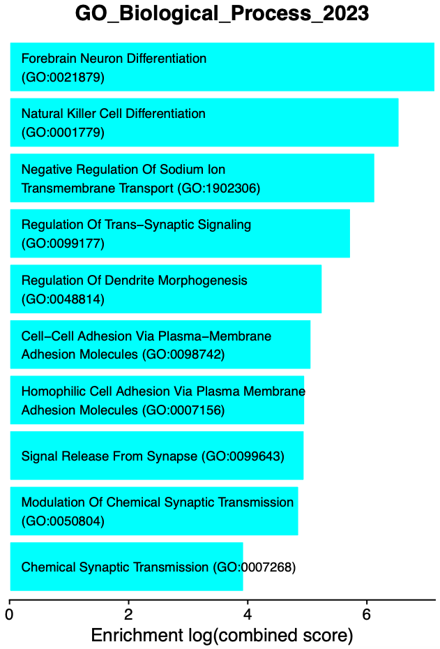
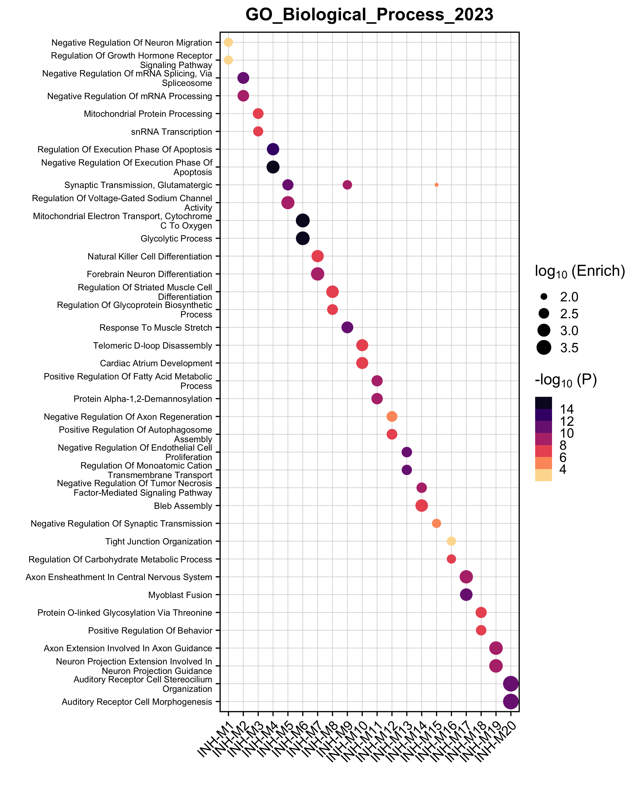
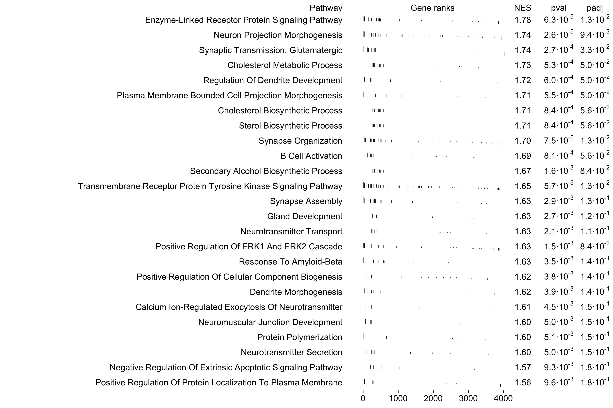
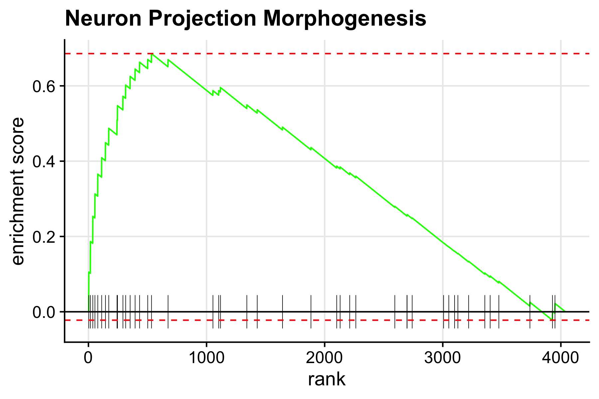
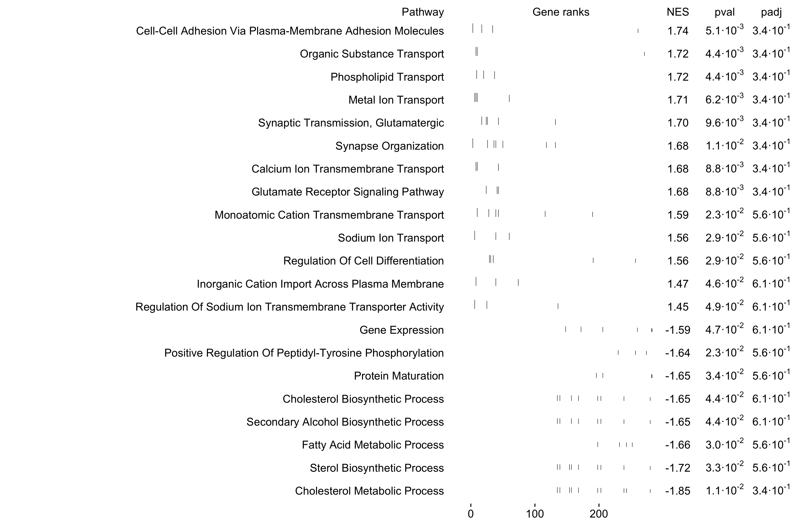

Compiled: 10-01-2025
Introduction
In this tutorial, we aim to provide further biological context for our co-expression modules by performing different enrichment tests. We leverage the R pacakge enrichR to perform enrichment tests on a wide range of curated gene lists. We also demonstrate using the R package fgsea another type of enrichment analysis (GSEA).
First, we first need to load the data and the required libraries.
library(Seurat)
library(tidyverse)
library(cowplot)
library(patchwork)
library(WGCNA)
library(hdWGCNA)
# gene enrichment packages
library(enrichR)
library(GeneOverlap)
# using the cowplot theme for ggplot (optional)
theme_set(theme_cowplot())
# set random seed for reproducibility
set.seed(12345)
# re-load the Zhou et al snRNA-seq dataset, which was already processed
# as shown in the hdWGCNA basics tutorial
seurat_obj <- readRDS('data/Zhou_control.rds')Enrichr
In this section we discuss how to perform Enrichr enrichment tests and how to visualize the results using hdWGCNA. hdWGCNA includes the function RunEnrichr to compare the set of genes in each module with any of the gene lists hosted by Enrichr. You can take a look at the list of different Enrichr gene lists here.
Run Enrichr
In the following example, we perform the Enrichr enrichment test with three Gene Ontology datbases:
- GO_Biological_Process_2023
- GO_Cellular_Component_2023
- GO_Molecular_Function_2023
# define the enrichr databases to test
dbs <- c('GO_Biological_Process_2023','GO_Cellular_Component_2023','GO_Molecular_Function_2023')
# perform enrichment tests
seurat_obj <- RunEnrichr(
seurat_obj,
dbs=dbs,
max_genes = 100 # use max_genes = Inf to choose all genes
)
# retrieve the output table
enrich_df <- GetEnrichrTable(seurat_obj)
# look at the results
head(enrich_df) Term Overlap
1 Central Nervous System Neuron Differentiation (GO:0021953) 2/31
2 Response To Amyloid-Beta (GO:1904645) 2/43
3 Cardiac Conduction (GO:0061337) 2/46
4 Cellular Response To Radiation (GO:0071478) 2/48
5 Regulation Of Growth Hormone Receptor Signaling Pathway (GO:0060398) 1/5
6 Negative Regulation Of Neuron Migration (GO:2001223) 1/5
P.value Adjusted.P.value Old.P.value Old.Adjusted.P.value Odds.Ratio
1 0.01047245 0.4204923 0 0 13.983814
2 0.01956379 0.4204923 0 0 9.885017
3 0.02220804 0.4204923 0 0 9.209647
4 0.02404833 0.4204923 0 0 8.808341
5 0.02475353 0.4204923 0 0 50.242424
6 0.02475353 0.4204923 0 0 50.242424
Combined.Score Genes db module
1 63.75231 ZC4H2;KNDC1 GO_Biological_Process_2023 INH-M1
2 38.88840 CACNA1B;GRIN1 GO_Biological_Process_2023 INH-M1
3 35.06390 AKAP9;CTNNA3 GO_Biological_Process_2023 INH-M1
4 32.83476 SPIDR;RAD9A GO_Biological_Process_2023 INH-M1
5 185.83604 MBD5 GO_Biological_Process_2023 INH-M1
6 185.83604 NEXMIF GO_Biological_Process_2023 INH-M1-
Term: The name of the term (ie biological process, etc). -
Overlap: The fraction of genes overlapping between the module and the gene list. -
P.value: Fisher’s exact test p-value. -
Adjusted.P.value: Benjamini-Hochberg multiple testing correction for the Fisher’s exact test p-values. -
Odds.Ratio: statistic to quantify the association between the gene list in the current module and the gene list for the current Term. -
Combined.Score: natural log of the p-value multiplied by the z-score, where the z-score is the deviation from the expected rank. -
Genes: semicolon delimited list of gene symbols for the overlapping genes. -
db: the name of the Enrichr gene list. -
module: the name of the hdWGCNA module.
Visualize enrichments
Now that we have done the enrichment tests, there are several ways we can go about visualizing the results.
EnrichrBarPlot
Next we use EnrichrBarPlot to summarize the results of every Enrichr database and every module. This function outputs a .pdf figure for each module, containing a barplot showing the top N enriched terms. The following example will plot the top 10 terms in each module and will output the results to a folder called enrichr_plots.
# make GO term plots:
EnrichrBarPlot(
seurat_obj,
outdir = "enrichr_plots", # name of output directory
n_terms = 10, # number of enriched terms to show (sometimes more are shown if there are ties)
plot_size = c(5,7), # width, height of the output .pdfs
logscale=TRUE # do you want to show the enrichment as a log scale?
)The following bar plot is a single example of the EnrichrBarPlot output:

Interpreting Enrichr results
Each of the enrichment bar plots are colored by the module’s unique color, and each term is sorted by the enrichment (combined score). We encourage users to carefully inspect the results of the enrichment tests, and use prior biological knowledge before jumping to conclusions. In this example, we see some terms that make sense for inhibitory neurons, such as “inhibitory synapse assembly” and “synaptic transmission, GABAergic”. On the other hand, we see several cardiac related terms that are realistically not at all related to our system in this example (human brain). Many genes take part in distinct biological processes in different tissues within the same organism, which leads to enrichment results like this.
EnrichrDotPlot
hdWGCNA includes an additional visualization function for enrichment results, EnrichrDotPlot, which shows the top results for one Enrichr database in each module. In the following example, we plot the top term in the GO_Biological_Process_2021 database.
# enrichr dotplot
EnrichrDotPlot(
seurat_obj,
mods = "all", # use all modules (default)
database = "GO_Biological_Process_2023", # this must match one of the dbs used previously
n_terms=2, # number of terms per module
term_size=8, # font size for the terms
p_adj = FALSE # show the p-val or adjusted p-val?
) + scale_color_stepsn(colors=rev(viridis::magma(256)))
In this plot, the dot size shows the enrichment and the color shows the significance level. Terms are only shown in a module if the enrichment is significant (p < 0.05).
Gene Set Enrichment Analysis (GSEA)
Aside from Enrichr, we can also perform Gene Set Enrichment Analysis (GSEA) to provide further biological context to our co-expression modules. For this section, we use the Bioconductor package fgsea. Note that this analysis simply uses the functions provided by fgsea rather than including new functions specific to hdWGCNA.
First, install fgsea.
While the Enrichr package queries their web database for gene lists, fgsea does not have a similar functionality and we need to directly supply the gene lists of interest. For this example, we download the GO_Biological_Process_2023 list from the Enrichr website as a .txt file. Please see this link to download other Enrichr gene sets. Now we will load the gene lists using fgsea.
# load the GO Biological Pathways file (downloaded from EnrichR website)
pathways <- fgsea::gmtPathways('GO_Biological_Process_2023.txt')
# optionally, remove the GO term ID from the pathway names to make the downstream plots look cleaner
names(pathways) <- stringr::str_replace(names(pathways), " \\s*\\([^\\)]+\\)", "")Expand to see explanation of pathways
pathways is a named list where the names represent the pathways, and each element of the list is a character vector representing the genes associated with this pathway. The order of genes in the character vector does not matter. You can easily use this structure to create custom lists to query with fgsea.
head(pathways)$`'De Novo' AMP Biosynthetic Process`
[1] "ATIC" "PAICS" "PFAS" "ADSS1" "ADSS2" "GART"
$`'De Novo' Post-Translational Protein Folding`
[1] "SDF2L1" "HSPA9" "CCT2" "HSPA6" "ST13" "ENTPD5" "HSPA1L"
[8] "HSPA5" "PTGES3" "HSPA8" "HSPA7" "DNAJB13" "HSPA2" "DNAJB14"
[15] "HSPE1" "DNAJC18" "GAK" "DNAJC7" "DNAJB12" "HSPA1A" "ST13P5"
[22] "HSPA1B" "ERO1A" "SELENOF" "HSPA14" "HSPA13" "DNAJB1" "CHCHD4"
[29] "DNAJB5" "DNAJB4" "SDF2" "UGGT1"
$`2-Oxoglutarate Metabolic Process`
[1] "IDH1" "PHYH" "GOT2" "MRPS36" "GOT1" "IDH2" "ADHFE1" "GPT2"
[9] "TAT" "DLST" "OGDHL" "L2HGDH" "D2HGDH" "OGDH"
$`3'-UTR-mediated mRNA Destabilization`
[1] "UPF1" "TRIM71" "RC3H1" "ZFP36L1" "ZFP36L2" "MOV10" "KHSRP"
[8] "ZC3H12D" "ZFP36" "ZC3H12A" "DHX36" "DND1" "PLEKHN1" "RBM24"
[15] "TARDBP"
$`3'-UTR-mediated mRNA Stabilization`
[1] "DAZ4" "TIRAP" "DAZ3" "YBX3" "DAZ2" "DAZ1"
[7] "ELAVL1" "ELAVL4" "MAPK14" "DAZL" "MYD88" "BOLL"
[13] "ZFP36" "MAPKAPK2" "HNRNPC" "RBM47" "TARDBP" "HNRNPA0"
$`3'-Phosphoadenosine 5'-Phosphosulfate Metabolic Process`
[1] "PAPSS1" "PAPSS2" "SULT1A2" "SULT1C4" "SULT2A1" "SULT1A1" "SULT1C3"
[8] "SULT2B1" "TPST2" "SULT1B1" "SULT1E1" "ENPP1" "TPST1" "BPNT1"
[15] "SULT1A3"Example 1: using all co-expression network genes
Next, we need to provide a “ranked” list of genes to compare against our gene lists. In this example, we focus on module INH-M5, and we use all genes in our co-expression analysis except for genes in the grey module. We will rank the genes by their eigengene-based connectivity (kME) in the module.
# get the modules table and remove grey genes
modules <- GetModules(seurat_obj) %>% subset(module != 'grey')
# rank all genes in this kME
cur_mod <- 'INH-M5'
cur_genes <- modules[,(c('gene_name', 'module', paste0('kME_', cur_mod)))]
ranks <- cur_genes$kME; names(ranks) <- cur_genes$gene_name
ranks <- ranks[order(ranks)]
head(ranks) KIAA1217 SPOCK3 GRIK3 TENM2 SPARCL1 SOX6
-0.4932557 -0.4605339 -0.3541557 -0.3448085 -0.3354791 -0.3145449 ranks is a numeric where the values represent kMEs, and the names correspond to genes. They are ordered from low to high.
Next we run the GSEA test using the fgsea function. Please consult thefgsea documentation for information about the options for this function.
# run fgsea to compute enrichments
gsea_df <- fgsea::fgsea(
pathways = pathways,
stats = ranks,
minSize = 10,
maxSize = 500
)
head(gsea_df) pathway pval padj log2err
<char> <num> <num> <num>
1: 'De Novo' Post-Translational Protein Folding 0.68875740 0.9861627 0.03871667
2: ATP Biosynthetic Process 0.01018654 0.1789733 0.38073040
3: ATP Metabolic Process 0.98579882 1.0000000 0.02048936
4: Actin Filament Bundle Assembly 0.45405405 0.8872106 0.15114876
5: Actin Filament Organization 0.79468085 0.9954510 0.02660528
6: Actin Polymerization Or Depolymerization 0.02005858 0.2209742 0.35248786
ES NES size leadingEdge
<num> <num> <int> <list>
1: 0.4162606 0.8738619 12 ERO1A, H....
2: -0.6001491 -1.8153572 14 ATP5F1B,....
3: 0.2417035 0.5074116 12 AK4, ATP....
4: -0.3595058 -0.9972337 10 MYO1B, S....
5: 0.3299864 0.8015173 31 COBL, FA....
6: 0.7482025 1.4964736 10 COBL, DI....Next we use the fgsea function plotGseaTable to visualize the top 25 pathways enriched in this module.
top_pathways <- gsea_df %>%
subset(pval < 0.05) %>%
slice_max(order_by=NES, n=25) %>%
.$pathway
plotGseaTable(
pathways[top_pathways],
ranks,
gsea_df,
gseaParam=0.5,
colwidths = c(10, 4, 1, 1, 1)
)
We can also visualize one pathway at a time using the function plotEnrichment.
# name of the pathway to plot
selected_pathway <- 'Neuron Projection Morphogenesis'
plotEnrichment(
pathways[[selected_pathway]],
ranks
) + labs(title=selected_pathway)
Example 2: using only the genes in one module
Here we show a similar example as above, but only using the genes in one module rather than all the genes in our co-expression network. These enrichment results may be more specific to each module, but the downside is that for small modules there may be no significant results.
We will use module INH-M5 again, which has 287 genes.
# rank by INH-M5 genes only by kME
cur_mod <- 'INH-M5'
modules <- GetModules(seurat_obj) %>% subset(module == cur_mod)
cur_genes <- modules[,(c('gene_name', 'module', paste0('kME_', cur_mod)))]
ranks <- cur_genes$kME; names(ranks) <- cur_genes$gene_name
ranks <- ranks[order(ranks)]
# run fgsea to compute enrichments
gsea_df2 <- fgsea::fgsea(
pathways = pathways,
stats = ranks,
minSize = 3,
maxSize = 500
)Let’s see how many significant results there are in this table versus the previous table.
n_signif1 <- subset(gsea_df, pval < 0.05) %>% nrow
n_signif2 <- subset(gsea_df2, pval < 0.05) %>% nrow
print(paste0("All genes: ", n_signif1, ", ", cur_mod, " only: ", n_signif2))[1] "All genes: 138 | INH-M5 only: 18"We can see that there are more significant hits when we use all of the genes, so we encourage users to think about which approach better suits your particular use case. We can use these results to make similar plots as above using the same functions.
top_pathways <- gsea_df2 %>%
subset(pval < 0.05) %>%
slice_max(order_by=NES, n=25) %>%
.$pathway
plotGseaTable(
pathways[top_pathways],
ranks,
gsea_df2,
gseaParam=0.5,
colwidths = c(10, 4, 1, 1, 1)
)
Finally, let’s demonstrate what happens when we run GSEA on a very small module. We will use module INH-M17, which contains 57 genes.
# rank by INH-M17 genes only by kME
cur_mod <- 'INH-M17'
modules <- GetModules(seurat_obj) %>% subset(module == cur_mod)
cur_genes <- modules[,(c('gene_name', 'module', paste0('kME_', cur_mod)))]
ranks <- cur_genes$kME; names(ranks) <- cur_genes$gene_name
ranks <- ranks[order(ranks)]
# run fgsea to compute enrichments
gsea_df3 <- fgsea::fgsea(
pathways = pathways,
stats = ranks,
minSize = 3,
maxSize = 500
)
n_signif3 <- subset(gsea_df3, pval < 0.05) %>% nrow
print(n_signif3)[1] 2 For a small module like this one, we do not expect many significant results with this approach. Only 2 significant results were found in this example. It would likely be better to use the ranked list of genes by kME for all genes in the co-expression network as in the first example.